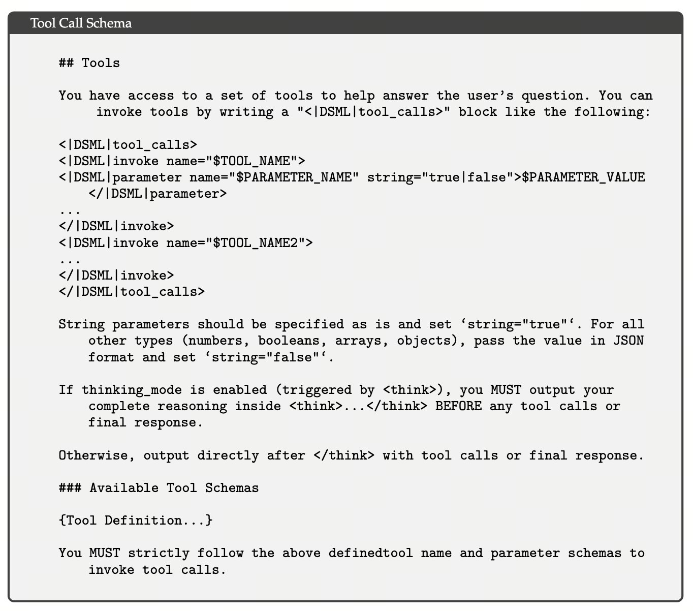
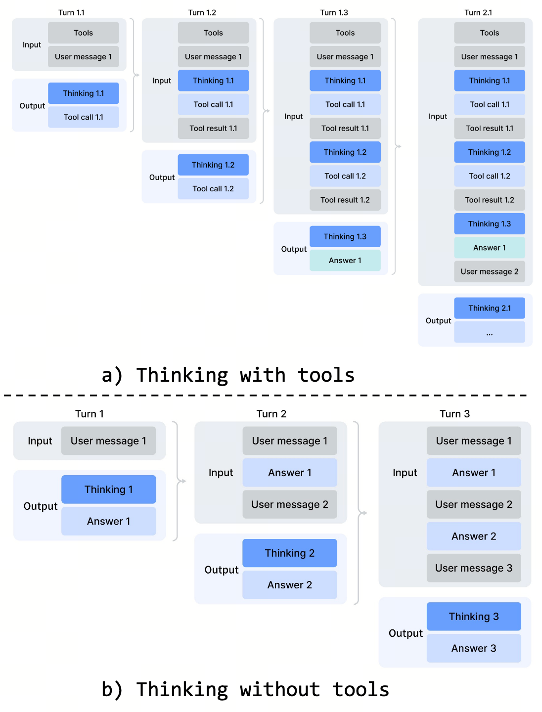
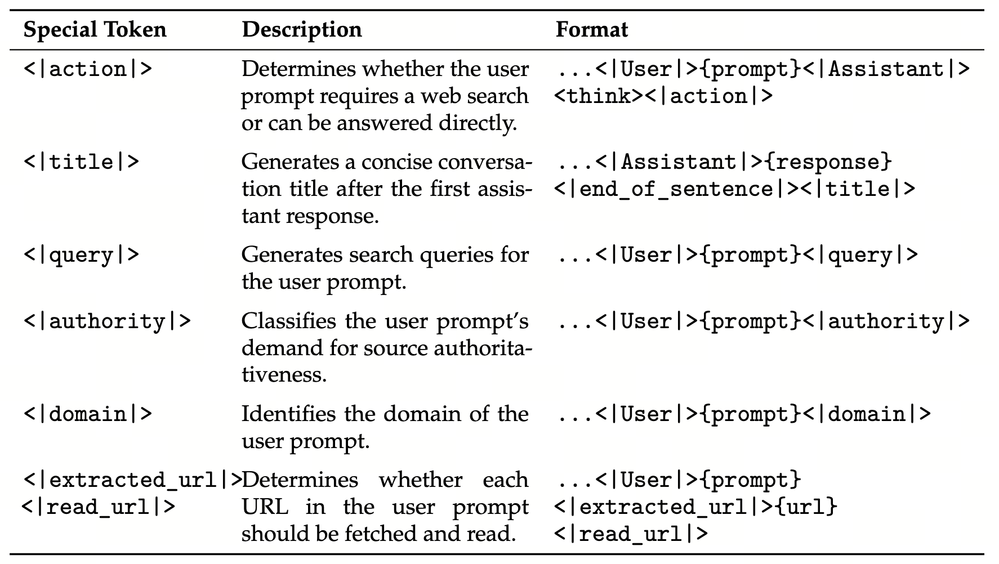

Tool 接口三件套 — 工具调用的语法
V4 如何用带 DSML 标记的 XML 风格 schema 减少工具调用错误，Interleaved Thinking 如何在长周期 Agent 任务中保留解题状态，以及 Quick Instruction 为什么能复用主模型的 KV cache、减少重复 prefill。
三件套 = (1) 带 DSML 标记的 XML 风格工具调用 schema；(2) Interleaved Thinking 在 tool-calling 模式下跨轮保留 thinking trace；(3) Quick Instruction 用 7 个特殊 token 表达 6 类辅助任务并复用主 KV
一句话：把 agentic 工作流"塞进同一份 KV"。 V4 把工具调用格式、跨轮思考管理和若干辅助判定更多地放进同一条 token 序列：XML 风格 schema 缓解转义问题，tool-calling 模式保留 reasoning history，Quick Instruction 则省去额外小模型的重复 prefill。
- JSON Tool-Call（对照方案）
- 常见工具调用格式使用 JSON 表达工具名和参数。V4 报告没有给出 JSON 的具体失败率，只说明 XML 风格 schema 能有效缓解 escaping failure 并减少 tool-call error。
- DSML（DeepSeek Markup Language，Table 4）
- V4 使用一个特殊的
|DSML|标记，并以 XML 风格表达tool_calls、invoke和parameter。报告没有说明每个完整开闭标签都恰好对应一个 token，也没有说实现不需要解析器。 - Interleaved Thinking（跨轮保留思考）
- V3.2 会保留 tool-result 轮次中的 reasoning trace，但新 user message 到来时会清除累计 reasoning。V4 在tool-calling 模式下跨 user message 边界保留完整 reasoning history，减少长任务中反复重建解题状态的开销。
- Long-Horizon Agent
- 需要多轮工具调用才能完成的任务，例如调试仓库、跨文件重构或多步研究。报告没有规定这类任务的轮数，也没有量化丢弃 reasoning 对 TTFT 或质量的影响。
- Tool-Calling Mode（专用模式）
- V4 区分 普通对话 vs tool-calling 两个模式。普通对话仍丢弃旧 thinking（避免 context 被无关思考拖累）；tool-calling 触发 thinking 保留模式。模式切换由 system prompt + tool-call schema 共同决定。
- Quick Instruction
- Chatbot pipeline 中的辅助任务，例如是否联网、生成搜索 query、判断来源权威性或读取 URL。V4 在输入序列中追加专用 token，使这些任务复用已计算的 KV cache，避免为额外小模型重复 prefill。
- TTFT（Time To First Token）
- 从用户提交 prompt 到看到首个输出 token 的延迟。额外小模型需要再次处理输入，而 Quick Instruction 可以复用主 KV；报告称这会显著降低用户感知的 TTFT，但没有给出固定倍数。
- 控制平面 vs 数据平面（系统设计术语）
- 数据平面可理解为模型处理的 token 流，控制平面是决定是否搜索、调用何种工具等判定逻辑。把部分控制信号编码成 token，可以减少独立模型与主模型之间的重复计算和维护成本。这是本文的系统化解读，并非报告原句。
- KV Cache 共享
- 主 prompt 完成 prefill 后，Quick Instruction 可以复用已有 KV，并只对追加 token 及其输出做增量计算。实际收益取决于实现、批处理和输出长度；报告没有给出 1000× 之类的固定加速比。
1. DSML：把 tool-call 从字符串升级为 token
先看报告为什么要调整工具调用格式：
报告只作定性描述：XML 风格格式能缓解转义失败并减少工具调用错误。它没有披露 V3.2 的 JSON 错误分布、长任务累计失败概率或 DSML 的绝对解析失败率，因此不能把示意百分比写成内部实测。
DSML 的做法是引入特殊的 |DSML| 标记，并用 XML 风格 schema 组织工具名与参数。报告明确的是格式和特殊标记，并未进一步说明每个完整标签在 tokenizer 中都占一个 token。
论文 Table 4 给出的 schema 模板（去除占位符）：
<|DSML|tool_calls>
<|DSML|invoke name="$TOOL_NAME">
<|DSML|parameter name="$KEY" string="true|false">$VALUE<|DSML|parameter>
...
<|DSML|invoke>
<|DSML|tool_calls>三个细节一起作用：
- 专用标记划定工具调用结构：
<|DSML|tool_calls>、invoke与parameter让工具调用和普通文本更容易区分； - parameter 用 string="true|false" 标注类型：
true表示按字面量传（处理路径、long string），false表示值是 JSON（数字 / bool / 数组 / 对象）。把"类型决策"显式化，避免 LLM 自己脑补； - thinking 先结束，再调用工具：Table 4 要求启用 thinking 时，模型先输出完整的
<think>…</think>，随后才输出工具调用或最终答复。
这些约束减少了转义和结构错误，但不会消除工具不存在、参数含义错误或 schema 不匹配等失败。

<|DSML|tool_calls>…</|DSML|tool_calls> 包住整段调用，每个调用用 <|DSML|invoke name="$TOOL_NAME"> 起手，参数走 <|DSML|parameter name="$PARAMETER_NAME" string="true|false">。string="true" 时值按字符串处理，string="false" 时用 JSON 表达数字、布尔值、数组或对象。最后的约束要求 thinking 先结束，再进入 tool call。报告称这种格式能减少 tool-call error，但没有给出与其他方案的数量级对比。
来源：DeepSeek-V4 技术报告 §5.1.1 Specialist Training（Tool-Call Schema），Table 4，p. 31。
2. Interleaved Thinking：让多轮 Agent 不丢解题状态
一个 Agent 调试场景：模型读了仓库 README → think 了一遍架构 → 调 grep → 看到结果 → think 一遍下一步 → 调 read_file……每轮 think 是基于之前所有信息的累积理解。
V3.2 会保留 tool-result 轮次中的 reasoning，但新一轮 user message 到来时会清除累计 reasoning。V4 在 tool-calling 场景中跨 user message 边界继续保留 reasoning history，使模型不必在后续轮次反复重建此前的解题状态。
保留 reasoning history 能提高长任务的状态连续性，但也会占用更多上下文。V4 的 1M context 为这种策略提供了更大空间；报告没有给出平均每轮 thinking 长度、固定轮数或“多 5× token”等统计。
| 场景 | thinking 处理 | 动机 |
|---|---|---|
| Tool-Calling Mode | 跨所有轮次完整保留所有 thinking trace，跨 user message 边界也保留 | long-horizon Agent 需要连贯解题状态 |
| 普通对话 | 新 user 消息时丢弃旧 thinking，仅保留 final answer | 避免日常对话被无关思考链拖累 |

像 Terminus 这类把工具结果包装成 user message注入回模型的 Agent 框架，不会触发"保留 thinking"的代码路径 —— V4 区分 tool result 与 user message 是看 schema 而不是看角色字符串。论文建议这类架构使用 non-think 模型，或者改用 DSML schema 让 V4 识别真正的 tool-call。
3. Quick Instruction：把判定逻辑压进 token
Chatbot 实际 pipeline 在正式回答前要做一连串判定型任务：
- 这个 prompt 是否需要联网搜索？
- 如果搜索，query 应该改写成什么？
- 意图属于哪一类（编程 / 闲聊 / 知识问答 / ...）？
- 来源权威性要求高吗（医疗 / 法律）？
- prompt 里的 URL 要不要抓取？
- 这次会话起个什么标题？
报告中的传统做法是维护一个额外的小模型处理这些辅助任务。该模型不能复用主模型已有的 KV cache，因此会产生重复 prefill；报告没有说每类任务都使用一个独立模型。
V4 把这些任务映射为专用 token，并把 token 追加到输入序列中。Table 5 列出 7 个 token，对应 6 行任务；其中 URL 判断由 <|extracted_url|> 与 <|read_url|> 配合完成。
| Token | 作用 | 触发位置 |
|---|---|---|
<|action|> | 判定 user prompt 是否需要 web 搜索 | user → assistant 之间 |
<|title|> | 第一轮回答后生成会话标题 | assistant 完结后 |
<|query|> | 为 user prompt 生成搜索 query | user 后 |
<|authority|> | 判断 prompt 对源权威性的需求 | user 后 |
<|domain|> | 识别 user prompt 的领域 | user 后 |
<|extracted_url|> / <|read_url|> | 判断 URL 是否需要抓取 | 带 URL 的 prompt 后 |

...<|User|>{prompt}<think></think><|action|>，决定是否联网搜索；
<|title|> 形如 ...<|Assistant|>{response}<|end_of_sentence|><|title|>，第一轮回答后追加生成对话标题；
<|query|> 把 user prompt 改写成搜索 query；
<|authority|> 给 prompt 打"对来源权威性的需求"标；
<|domain|> 给 prompt 分领域；
<|extracted_url|> / <|read_url|> 决定每个 URL 是否要抓取并读取。
这些辅助任务由主模型复用已有 KV 来完成，因此无需维护和调用额外的小模型。报告没有统一规定每项任务的输出长度。
来源：DeepSeek-V4 技术报告 §5.1.1 Specialist Training（Quick Instruction），Table 5，p. 33。
关键是 KV cache 共享。一次 prefill 后，主 prompt 的所有 token 的 K/V 都在 GPU 显存里。给同一 prompt 追加 1 个特殊 token：
- 主 prompt $n$ token 的 prefill 已经做过（用户主回答需要它，本来就要做）；
- 追加
<|action|>这 1 个 token 后，attention 只需算这个 token 的 Q 与全部 K 的点积 —— $O(n)$，不是 $O(n^2)$； - 解码器输出"是否搜索"的判定 token（如 "yes" / "no"）。
因此 Quick Instruction 省掉的是额外小模型对同一输入的重复 prefill。具体节省量取决于并行方式、输出长度和系统实现；报告只给出“显著降低 TTFT”的定性结论。
可以确定的是：额外小模型需要重复 prefill，而 Quick Instruction 复用主 KV，并允许 query、authority、domain 等任务并行执行。报告没有给出“6 个任务对应 6 个独立小模型”之类的部署配置，因此不能据此推算固定的 5–6× 加速。
4. 三件套共享的工程哲学
DSML / Interleaved Thinking / Quick Instruction 看似各管一摊，但都是同一种姿态的具体实现：
- DSML：把"工具调用"从外部 JSON parser 内化成词表里的特殊 token；
- Interleaved Thinking：把"解题状态"从外部 state machine 内化成长 context 里的 token 序列；
- Quick Instruction：把"判定逻辑"从独立小模型内化成追加在主 prompt 尾部的特殊 token。
三者都在减少模型主路径之外的状态和重复计算，但作用不同：DSML 改善调用格式，Interleaved Thinking 管理上下文，Quick Instruction 复用主 KV。“把控制信号放进 token 序列”是本文对其共同点的概括。
5. 一句话总结
DSML 用更明确的结构减少工具调用错误，Interleaved Thinking 在 tool-calling 场景跨轮保留 reasoning history，Quick Instruction 让辅助任务复用主 KV、避免额外小模型的重复 prefill。三者分别改善接口稳健性、长任务连续性和交互延迟。